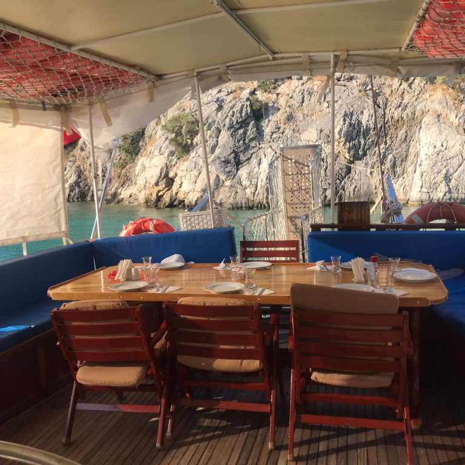
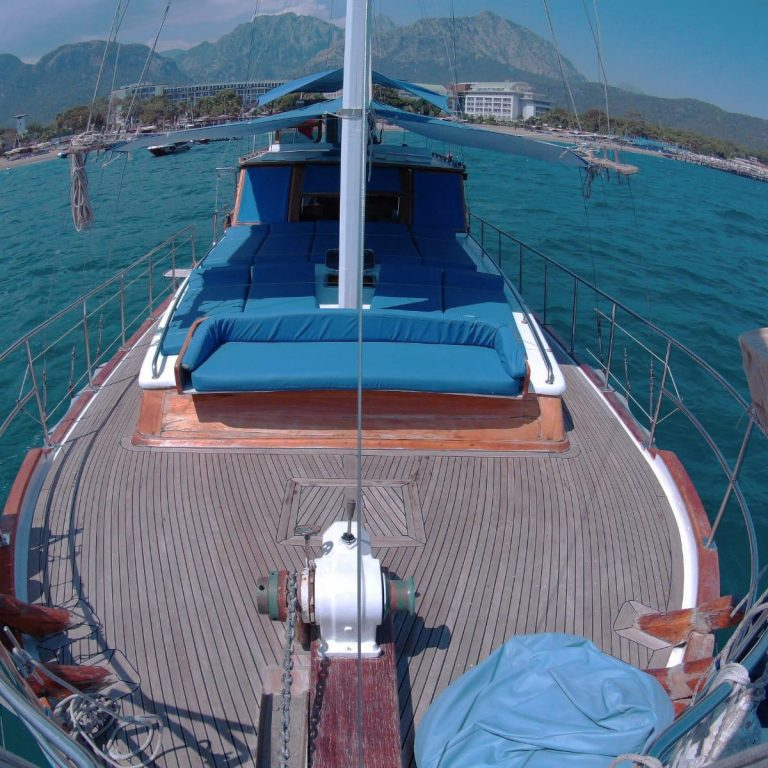
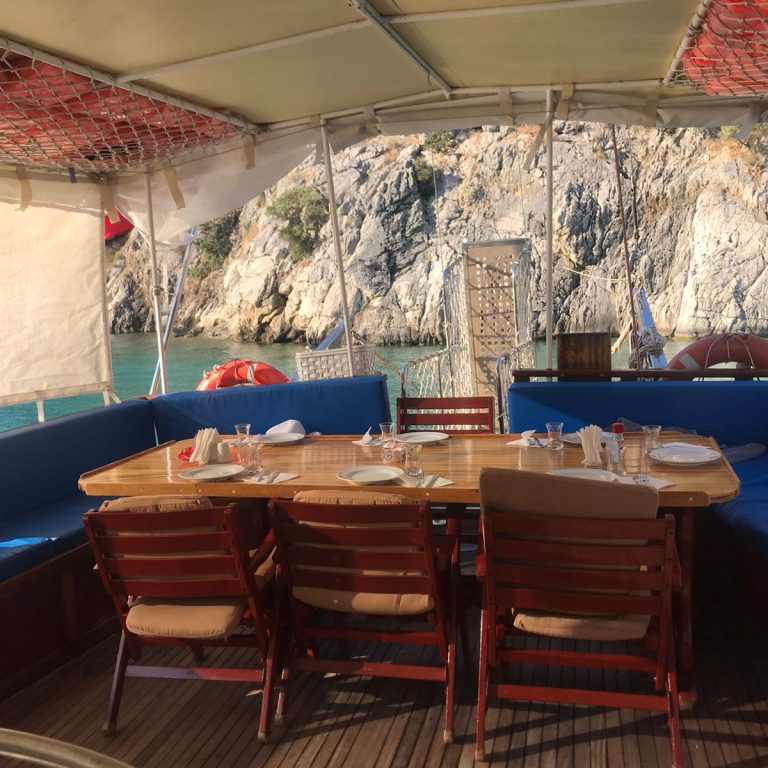
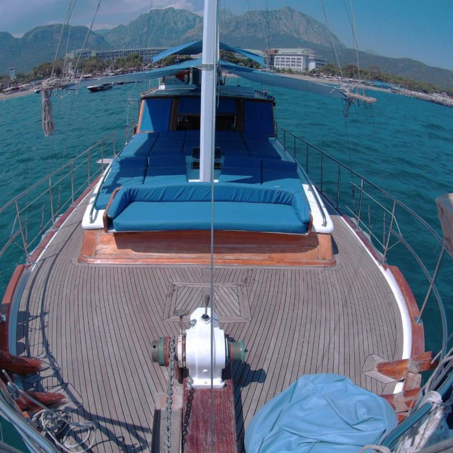

Teknemiz 4 kamaralıdır
Her kamararada çift kişilik yatak bulunmaktadır
Her kamarada ayrı tuvalet ve banyo bulunmaktadır
Salonumuzda klima bulunmaktadır
Salonumuzda televizyon bulunmaktadır
İnternet bağlantımız mevcuttur
12 kişilik güneşlenme alanımız mevcuttur
Yemek masamız ile açık havada servis yapabiliyoruz
Kıyıya çıkmak için hizmet botumuz hazırdır
 


